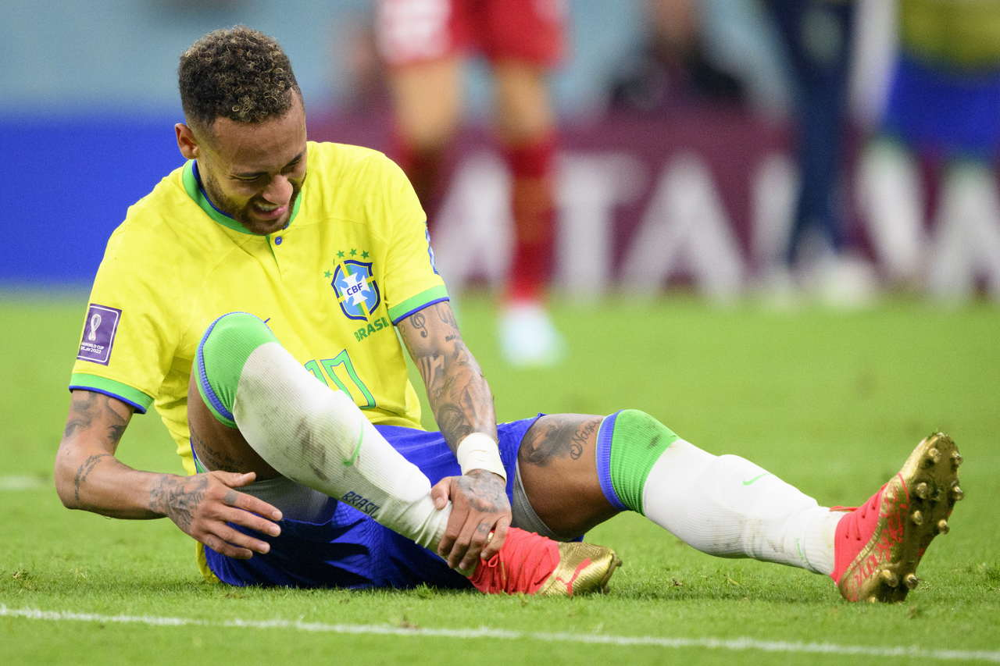

A camisa 10 do Brasil não é apenas um uniforme; é uma instituição do futebol mundial. Vestida por Pelé, Zico, Rivaldo e Ronaldinho, ela encontrou em Neymar Jr. o seu herdeiro natural no século XXI. Para entender o tamanho do impacto de seu retorno na Copa do Mundo de 2026, é preciso olhar para trás e compreender a monumental prateleira de conquistas que transformou o menino de Santos em uma lenda viva do esporte global.
Neymar não é apenas um jogador de lances plásticos; ele é um vencedor em série. Por onde passou, o craque ergueu taças e mudou o patamar dos clubes que defendeu.

A genialidade de Neymar sempre atraiu a admiração dos torcedores e, infelizmente, a caça dos defensores adversários. A história do craque em Copas do Mundo é um roteiro de drama, resiliência e superação psicológica crônica.
2014: O Impacto TraumáticoNa Copa em casa, uma entrada violenta nas quartas de final fraturou sua vértebra L3. O sonho foi interrompido brutalmente quando ele vivia o seu auge físico e técnico.
2018: A Corrida Contra o TempoOperado no pé direito poucos meses antes do torneio na Rússia, jogou no sacrifício, sem o ritmo ideal, mas ainda assim liderou o time até as quartas.
2022: O Choro no CatarUma entorse grave no tornozelo logo na estreia parecia decretar o fim de sua Copa. Neymar voltou no mata-mata, marcou um gol antológico contra a Croácia, mas viu o destino ser cruel nos pênaltis.
A Saga do Ciclo AtualA lesão mais grave de sua carreira — o rompimento do ligamento cruzado anterior (LCA) e do menisco — testou os limites de sua força mental. Foram meses de dores diárias na fisioterapia e isolamento. Cada cicatriz no corpo de Neymar é o preço pago por sua recusa em desistir do maior sonho de sua vida.
Muitos tentaram, mas só Neymar conseguiu o impossível: ultrapassar o Rei Pelé em gols oficiais pela Seleção Brasileira Masculina nas estatísticas da FIFA.
Com 79 gols marcados, ele isolou-se no topo da artilharia histórica da Amarelinha. Cada gol marcado por ele não foi apenas um número na estatística, mas uma pintura em forma de drible, falta ou arrancada genial. Estar acima de todos os monstros sagrados que já vestiram essa camisa prova que, independentemente das críticas, estamos diante de um dos maiores patrimônios da história do esporte.
Neymar chega à fase decisiva de 2026 não apenas para jogar futebol, mas para consolidar um legado que já é eterno. A obsessão pela taça que falta é o combustível que move o atleta mais resiliente de nossa história recente.
highlights história do Ney Página 1 Página 3